He who dove too deep into git checkout and git reset, Part 1
I love git. I think it's a brilliant masterpiece of design and programming by Linus Torvalds. To me it's more than just a tool—it's art. Ok I'm a little weird but we know that today git is the de facto tool for version control and an unequivocal cornerstone of successful software development.
In this blog post series, I'm going to dive really deep into the inner workings of the commands git checkout and git reset, break them down logically, and expose the method to the madness. You might already be familiar with a few aspects of these commands, but both of them conceal surprisingly powerful and useful functionality. Some of it might be new territory but I hope a lot of it will absolutely blow your mind. Either way, let's started with git checkout.
Table of contents¶
- A pointer or two about a pointer or two
- Checking out a branch
- Checking out a commit
- Demystifying the detached HEAD state
- When and why git checkout sometimes doesn't work
- Thoughts and what's next
A pointer or two about a pointer or two¶
To understand how git checkout and git reset work, we're going to need to visit a place that most developers pretend doesn't exist, if not dread. Yes, we're going to visit the .git directory of a git repository.
The .git directory is chock full of information about a codebase and its history, but the only components we'll be needing here are two types of pointers.
To help explain, I'll be using this toy repository below—feel free to clone it and follow along. In the repository, you can see I made a few commits on the master branch, and then added a few commits on its two child branches branch1 and branch2.
The branch reference¶
The first pointer is a branch reference (let's call it a BRANCH ref from now on) and it identifies the most recent commit—the "tip" or present state—of a branch by storing its SHA-1 value in a file within the directory .git/refs/heads/. Let's take a peek at the BRANCH ref for the master branch.
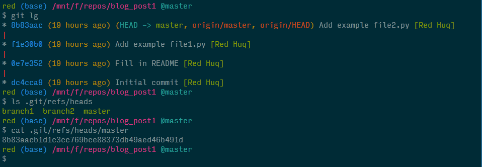
We see that the abbreviated SHA-1 value for the most recent commit on the master branch matches the value stored in .git/refs/heads/master. As you may have guessed, the branches branch1 and branch2 have their own BRANCH refs.
The HEAD reference¶
In git repositories, we typically have numerous branches that we switch between frequently. How does git know which branch we're currently on? That responsibility is given to another type of pointer called the HEAD reference (or the HEAD ref). Sound familiar? When interacting with git in the command line, you've probably seen the HEAD ref rear its head (sorry, couldn't help it).
While there's a BRANCH ref for each branch, there's only one HEAD ref. By default, the HEAD ref file stores a pointer to the BRANCH ref of the current branch. Because we're on the master branch right now, let's visualize what this looks like.
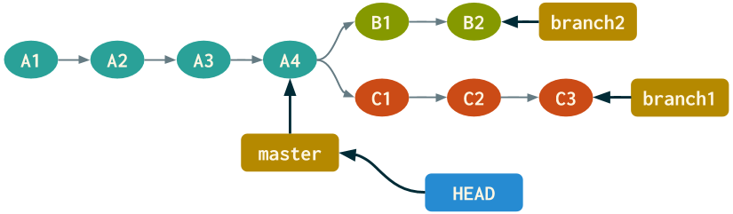
Now let's examine the HEAD ref file in the .git directory.
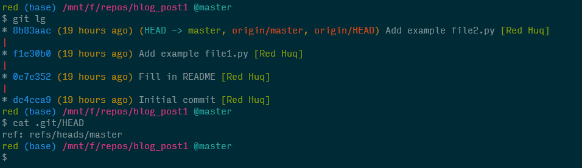
We can see that the file .git/HEAD contains a pointer to the BRANCH ref for the master branch—our current branch. To summarize, think of the HEAD ref as a marker for where you are currently in the repository.
Checking out a branch¶
Let's use our newfound knowledge on these two types of pointers to unravel a command most developers are very familiar with and use often: git checkout <branch>—it lets us switch from one branch to another.
When switching branches, git assigns the HEAD ref to a different BRANCH ref. That's it.
Here's the updated diagram after executing git checkout branch1.
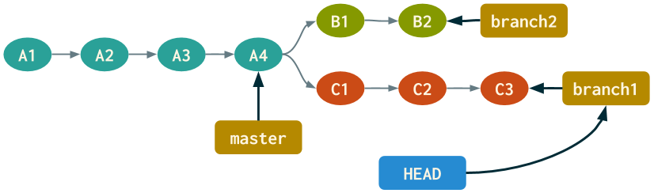
Let's also take a look at the HEAD ref file in the .git directory.
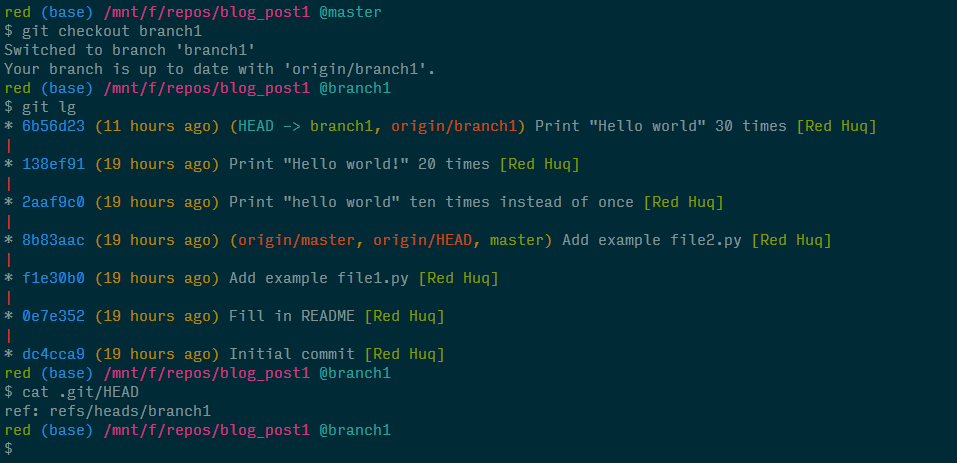
I've hacked my terminal to make it pretty, but try executing the default git log while on branch1. That very first line in the log has been concealing the truth the entire time!
Checking out a commit¶
If git checkout <branch> moves us to another branch, then git checkout <commit> (where <commit> is a SHA-1 value) probably moves us to another commit? Indeed! But what does that even mean, and what happens to the HEAD ref?
I'll answer the second question first: git checkout <commit> assigns the HEAD ref directly to a commit, i.e., the HEAD ref file no longer stores a pointer to a BRANCH ref, but rather stores the commit's SHA-1 value.
If we were to checkout the first commit on branch1 (SHA-1 2aaf9c0), the updated diagram would look like:
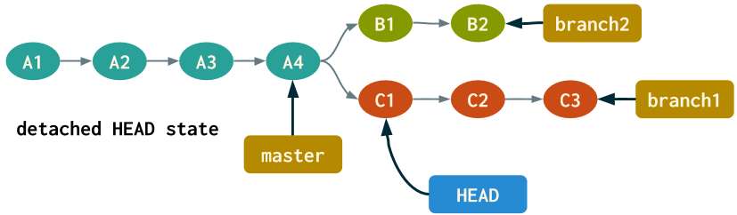
Now let's see what happens when we emulate this in the terminal and inspect the HEAD ref file.
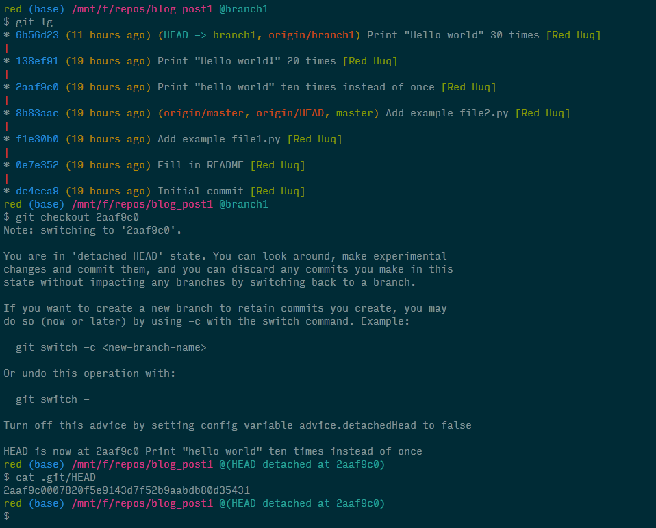
Ignore the scary looking "detached HEAD state" message and focus on the contents of the HEAD ref file. As we can see, it no longer contains a pointer but the full SHA-1 value for the commit we checked out.
Demystifying the detached HEAD state¶
I still remember the first time I inadvertently found myself face-to-face with the scary "detached HEAD state" (is this limbo?) and those austere messages from git. It's actually pretty straightforward once you break it down.
Because the HEAD ref no longer points to a BRANCH ref, it's not coupled to a branch and its most recent commit; hence the aptly named detached HEAD state. But let's think about what this entails. We know a BRANCH ref identifies the present state of a branch, while the HEAD ref tells us where we are currently in the repository. That suggests checking out a commit enables us to visit a previous state of the codebase—effectively travelling back in time!
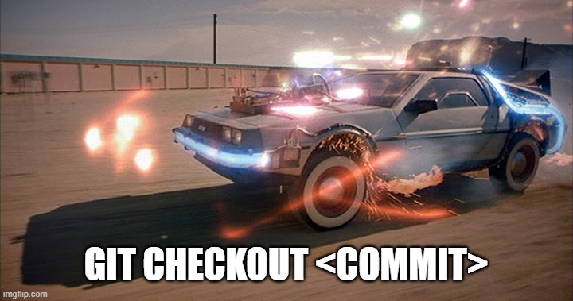
We can also move forward in time if we checkout a more recent commit, say, the second commit on branch1 (SHA-1 138ef91). Here's the updated diagram after executing git checkout 138ef91.
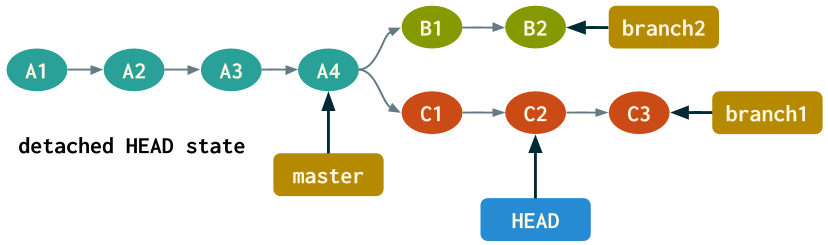
The target commit can even be the most recent commit on a branch, but checking out a commit will always result in entering a detached HEAD state.
Using the detached HEAD state effectively¶
Why would anyone want to be in a detached HEAD state?
For starters, a detached HEAD state can be your best friend when fixing bugs. Say we discover a bug but don't know when or how it was introduced. By checking out past commits, we can regress to a state when the code was bug-free and then identify the commit responsible. If you adhered to git best practices by submitting atomic commits with informative commit messages, then finding the culpable commit is straightforward because you've left yourself numerous breadcrumbs.
Fixing the bug would be even easier—you could just revert that commit without worry! There's even a handy git command to systematically find the bug using binary search. But if your commits were bloated with all sorts of changes and the commit messages were broad and ambiguous, then may god help you.
Another great use of a detached HEAD state is for experimentation. We can play around with a previous state of the codebase, and even submit commits in the local repository. But once we leave the detached HEAD state, these commits will be lost. To keep these commits, simply create a new branch.
Leaving the detached HEAD state¶
There's two ways to exit a detached HEAD state: at any point, either create a new branch or switch to an existing one. Why do these work? Because first, both options involve checking out a branch. Second, we already know that checking out a branch assigns the HEAD ref to a different BRANCH ref (either newly created or an existing one, respectively); either way, the HEAD ref gets "reattached".
We'll demo this by checking out the second commit of branch1, creating a new file, submitting a commit, and then finally creating a new branch branch3. The updated diagram would look like:
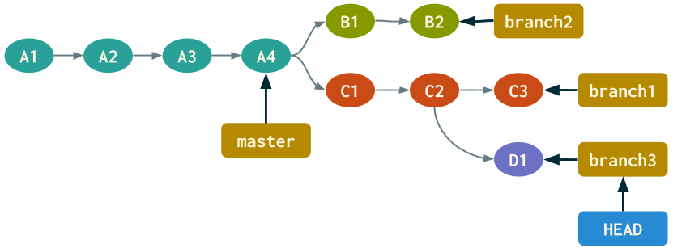
Next, let's execute the corresponding commands in the terminal.
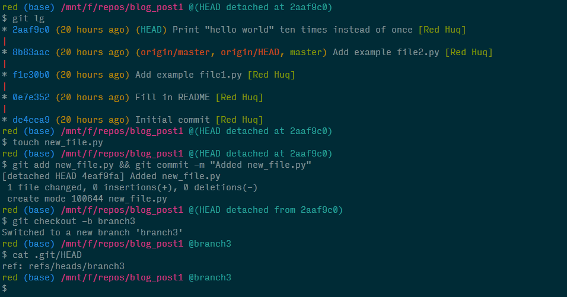
Notice that creating branch3 not only let us leave the detached HEAD state, but the contents of the HEAD ref file once again points to a BRANCH ref.
When and why git checkout sometimes doesn't work¶
Sometimes checking out commits (git checkout <commit>) or existing branches (git checkout <branch>) fails and git tells us
Please commit your changes or stash them before you switch branches. Aborting
In this final section, we'll explain when and why this scenario occurs and how to deal with it.
Let's say we made a change—either modified the contents of a file, deleted it, or added a new file entirely. If that change exists in our working directory or index (some call it the staging area), attempting to checkout a commit or an existing branch will fail if that change is in conflict with the state of the working directory or index, respectively, of the target commit or branch.
I'll admit that's a lot to digest so to help explain it, let's start on branch1, modify file1.py (i.e., introduce a change in the working directory), and try to switch to branch2, which also contains a file1.py.
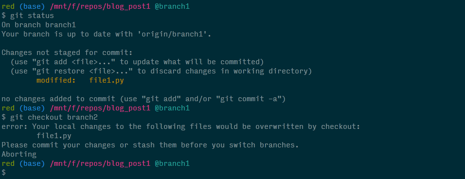
Because our changed file1.py in the working directory would be overwritten by the same file in the working directory on branch2, git actually does us a favor and asks us what we'd like to do with the change we made (hey it could be important). And we have 3 options: either commit, stash, or discard the changes. After selecting one of these options, we'd be free to switch to branch2.
The same rules apply if:
- we tried to switch branches but the above change existed in the index instead of the working directory
- we attempted to checkout a commit, instead of a branch, that had a conflicting version of
file1.py
To really hit this home, let's introduce a different change by creating a new file file3.py on branch1, adding it to the index, and then attempting to switch to branch2.
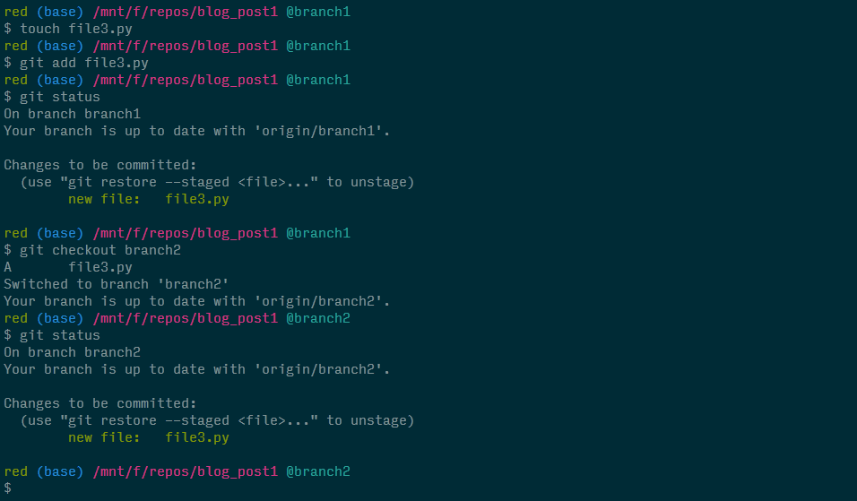
Notice that git doesn't stop us from checking out branch2. In fact, git allows us to bring that change over to branch2. This is because branch2 doesn't already have a file3.py in its index and therefore, no conflict is present.
One last point and it might be obvious but checking out a branch will never fail when creating a new branch regardless of what changes are currently present in the working directory or index. This makes sense because the working directory and index of a new branch will never, by definition, be in conflict with the original branch.
In summary, during a git checkout <branch> or git checkout <commit>, both the working directory and index will be updated. If there are any conflicts present, we'd need to address them.
Thoughts and what's next¶
We all know that git has a steep learning curve, mainly due to its abstract nature. The fact that most training sessions ask newcomers to memorize commands doesn't help at all. Learning git by memorizing and regurgitating didn't work for me, and I'm positive that applies to most folks. Only after dissecting a command, unraveling how it works, and understanding the underlying logic driving its functionality did I feel proficient.
I know this was probably more than you ever expected to know about using git checkout, but I'm hoping it empowered you to use this command more confidently and effectively so you spend more time developing and spend less time perusing StackOverflow or googling to refresh your memory.
The next command I plan to cover is git reset; it's not as straightforward as git checkout, but everything I covered here will serve as building blocks to digesting git reset. So keep an eye out for a future blog post on this command as well how to use both git checkout and git reset at the file level...
Comments
Comments powered by Disqus